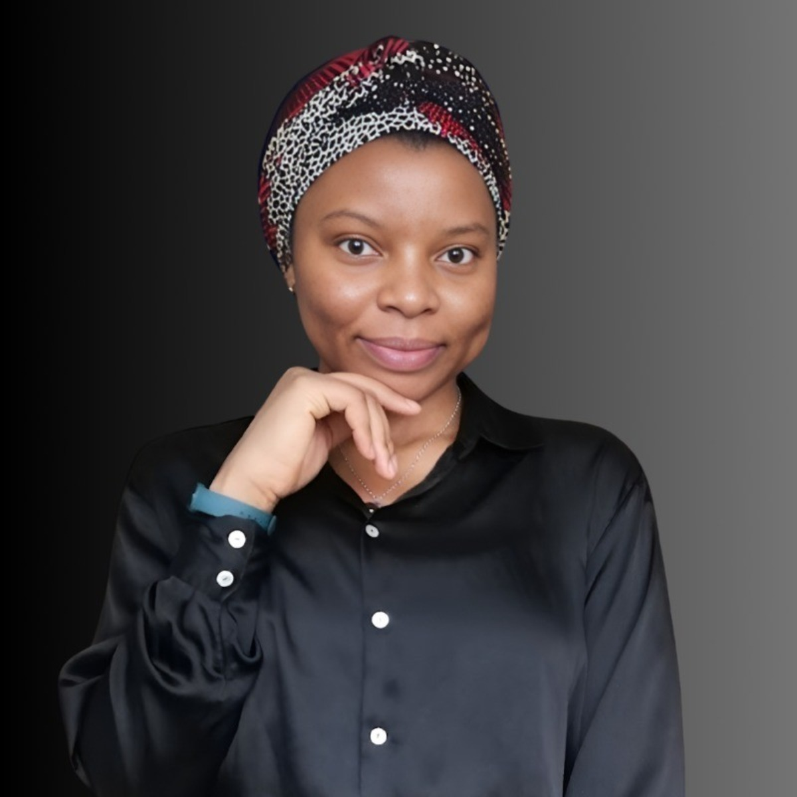

∑
Mathematical Modeling
Models for infectious disease dynamics in plants, humans, aquatic systems, and environmental contexts.
Clotilde Djuikem is a Postdoctoral Research Fellow in Applied Mathematics at the University of Manitoba. Her work develops and analyzes mathematical models for infectious disease dynamics in biological and environmental systems, combining deterministic and stochastic approaches, control theory, and numerical analysis.
```
Clotilde Djuikem is a Postdoctoral Research Fellow in Applied Mathematics at the University of Manitoba in Canada. Her research focuses on mathematical models for the emergence, transmission, and control of pathogens in plants, humans, and aquatic systems.
Her work combines deterministic models, stochastic processes, dynamical systems, control theory, and numerical analysis to study how biological systems evolve under changing environmental and epidemiological conditions.
Her current postdoctoral work includes multi-scale modeling questions linking intermediate-filament assembly with pathogen introduction and transmission, as well as mathematical models for viral pathogen transmission among fish species under climate change scenarios.
She earned her PhD in Applied Mathematics from Université Côte d’Azur and Inria in France, where her doctoral research focused on the modelling and control of perennial plant pathogens. She also holds a Master’s degree and a Bachelor’s degree in Applied Mathematics from the University of Douala.
Alongside her research, Clotilde has extensive teaching experience across Africa, Europe, and North America. She has taught courses in calculus, statistics, mathematical modeling, and numerical methods, and has contributed to student mentoring and research supervision.
```Models for infectious disease dynamics in plants, humans, aquatic systems, and environmental contexts.
Stability, thresholds, bifurcations, long-term behavior, and control mechanisms in complex systems.
Markov chains, stochastic models, simulations, and numerical analysis for biological systems.
Clotilde has taught across several academic systems and has experience in calculus, statistics, mathematical modeling, numerical methods, probability, linear algebra, and differential equations. Her teaching and mentoring activities support undergraduate and graduate students in mathematical sciences and applied modeling.
More than 600 hours of teaching across Africa, Europe, and North America.
Calculus, statistics, probability, mathematical modeling, and numerical methods.
Support for student training, research projects, and applied mathematics learning.
Clotilde is committed to science communication and inclusive STEM education. Through school outreach, public talks, educational videos, books, and community initiatives, she works to make mathematics more visible, accessible, and connected to real-world challenges.
Educational videos and public mathematics content for students and broader audiences.
Activities connecting mathematics, scientific careers, and inclusive STEM inspiration.
Talks, books, and educational resources presenting mathematics through concrete applications.